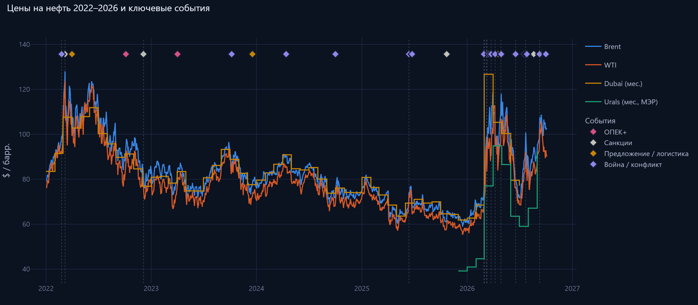
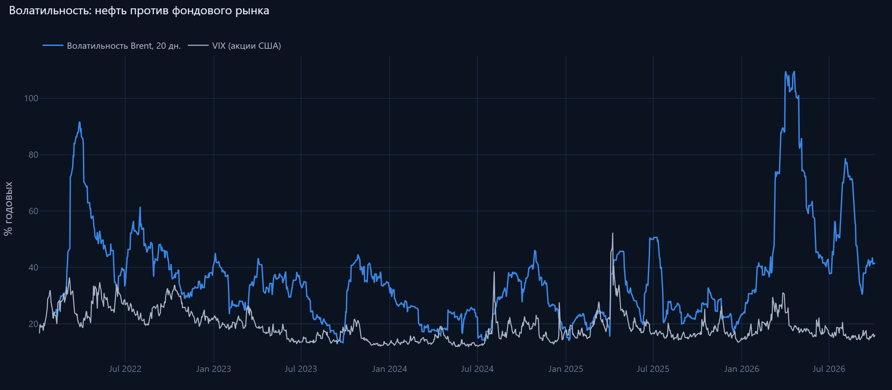
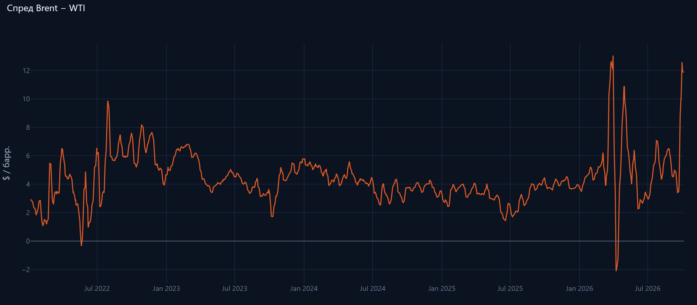
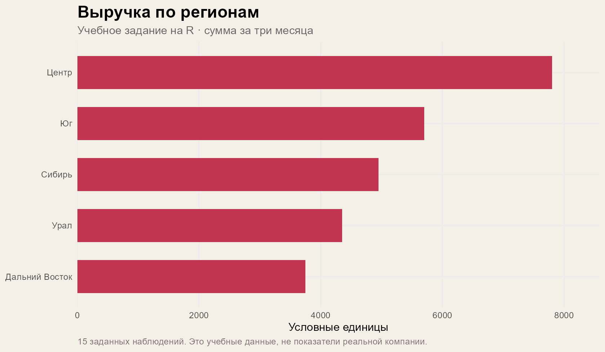
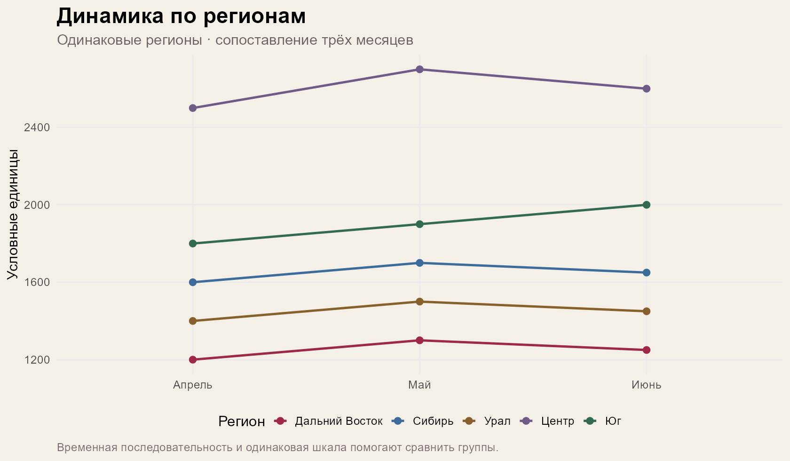

В существующем проекте собраны ряды Brent, WTI, Urals и Dubai, сравнительные графики и исследовательский отчёт. Здесь — выбранные графики из этого проекта.
Срез исходного проекта: 5 октября 2026. Источники в отчёте: Yahoo Finance, FRED и официальные месячные данные. Расчёты и событийные интерпретации ещё требуют независимой проверки. Совпадение событий и движения цен не доказывает причинность; это не инвестиционная рекомендация.

Задача графика — сопоставить временные ряды. При чтении важно учитывать различия сортов, инструментов и частоты наблюдений.

Волатильность показывает изменчивость ряда. Метод расчёта, окно и годовое приведение должны быть описаны вместе с графиком.

Сравнение рядов и спреда помогает сформулировать вопросы для дальнейшего анализа. Сам график ещё не объясняет причины расхождения.
Учебная работа / R, dplyr, ggplot2
От таблицы к понятному сравнению.
Задание из сохранённой контрольной: 15 наблюдений, пять регионов, три месяца. Группировка, фильтрация, сортировка и визуализация выручки. Данные учебные.
Графики пересобраны в R по заданным в работе значениям. Проверено: 15 строк и общая сумма 26 550 условных единиц. Это не реальные продажи компании.

После группировки по региону лидирует Центр — 7 800 условных единиц. Сравнение выполнено на одной шкале с нулевой точкой.
Результат группировки исходных 15 строк
Регион
Сумма за три месяца
Центр
7 800
Юг
5 700
Сибирь
4 950
Урал
4 350
Дальний Восток
3 750

Следующий вопрос — как меняется каждый регион во времени. Три точки показывают заданную учебную последовательность, но не дают основания прогнозировать будущую выручку.
Учебная работа / PostgreSQL
Клиенты, товары и заказы.
В найденной SQL-работе есть три связанные таблицы, первичные и внешние ключи, ограничения значений и выборки. Здесь показана схема структуры без исходного SQL и без персональных записей.
order_id · PK customer_id · FK product_id · FK quantity > 0 order_date
Товары
product_id · PK name price ≥ 0 in_stock ≥ 0
Один клиент → много заказов. Один товар → много записей о заказах.
Что показывает эта работа
Структуру реляционной базы, связи сущностей, ограничения целостности и работу с выборками. Это учебная модель: одна запись заказа связана с одним товаром. Для полноценной корзины понадобится отдельная таблица позиций заказа.
Названия таблиц и полей отражают сохранённое задание. Имена и email из учебного файла не опубликованы. Запросы и оригинальный код остаются в локальном проекте.
Приватный проект / Python, Telegram, MAX, email
Обращение не теряется между каналами.
Бот собирает входящие обращения в единую рабочую группу. Оператор отвечает на связанное сообщение, а система доставляет ответ в исходный канал.
Заявитель→Входящий канал→Очередь операторов→Ответ в исходный канал
Состояния
Новое→В работе→Закрыто / отклонено
Что показывает проект
Маршрутизацию между каналами, связь исходных сообщений и ответов, назначение ответственного, статусы и историю. Отдельно обрабатываются ограничения вложений и ошибки доставки.
Здесь схема процесса, а не публично запущенный бот и не скриншот переписки. Реальные обращения, контакты, идентификаторы и секреты не опубликованы.